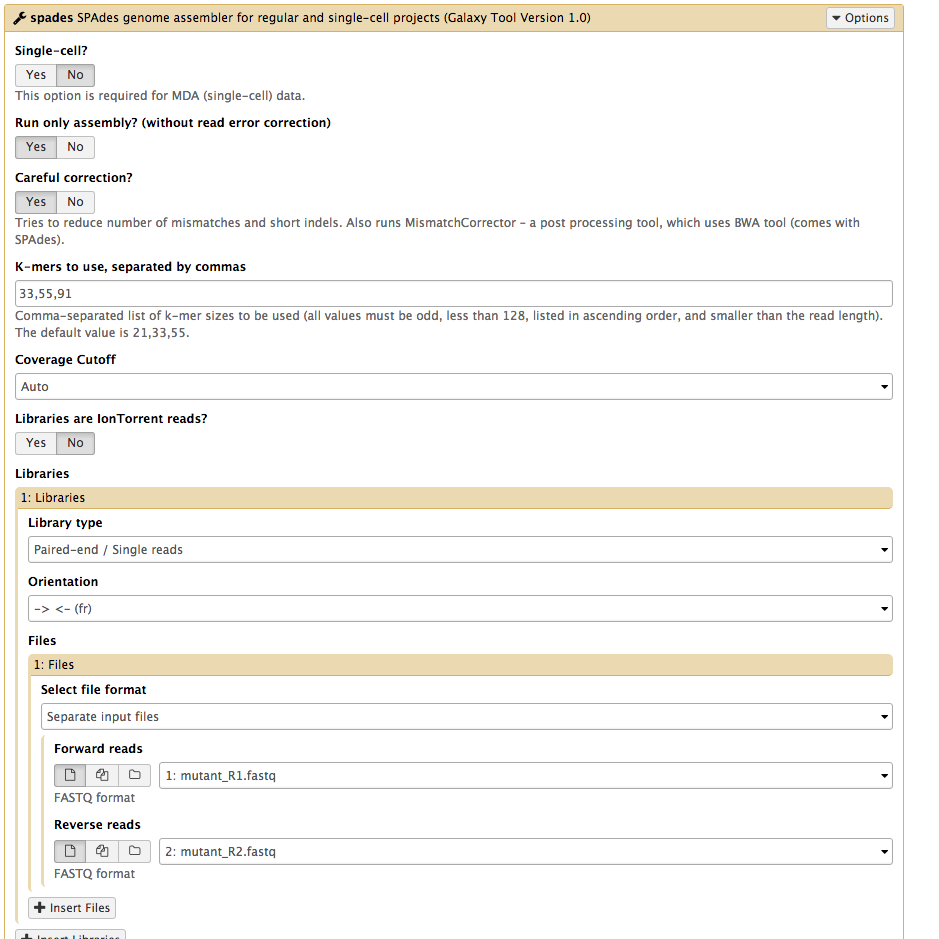
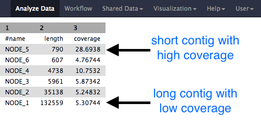

Assembly using Spades
Background
Spades is one of a number of de novo assemblers that use short read sets as input (e.g. Illumina Reads), and the assembly method is based on de Bruijn graphs. For information about Spades see this link.
Learning objectives
At the end of this tutorial you should be able to:
- assemble the reads using Spades, and
- examine the output assembly.
Import and view data
Galaxy
If you are using Galaxy-Mel or Galaxy-Qld, import the files:
- In your browser, go to Galaxy-Mel or Galaxy-Qld
- In the top Galaxy panel, go to
User and log in (or register, and then log in) - In the top Galaxy panel, go to
Shared Data and click on the drop down arrow - Click on
Histories - Click on
Genomics-workshop and then (over in the top right)Import history - The files will now be listed in the right hand panel (your current history).
(Alternatively, see here for information about how to start with Galaxy, and here for the link to import the Galaxy history for this tutorial, if you don't already have them in your history.)
The data
The read set for today is from an imaginary Staphylococcus aureus bacterium with a miniature genome.
-
The whole genome shotgun method used to sequence our mutant strain read set was produced on an Illumina DNA sequencing instrument.
-
The files we need for assembly are the
mutant_R1.fastq andmutant_R2.fastq . -
(We don't need the reference genome sequences for this tutorial).
-
The reads are paired-end.
-
Each read is 150 bases long.
-
The number of bases sequenced is equivalent to 19x the genome sequence of the wildtype strain. (Read coverage 19x - rather low!).
- Click on the View Data button (the ) next to one of the FASTQ sequence files.
Assemble reads with Spades
-
We will perform a de novo assembly of the mutant FASTQ reads into long contiguous sequences (in FASTA format.)
-
Go to
Tools → NGS Analysis → NGS: Assembly → spades -
Set the following parameters (leave other settings as they are):
Run only Assembly : Yes [the Yes button should be darker grey]Kmers to use separated by commas: 33,55,91 [note: no spaces]Coverage cutoff: autoFiles → Forward reads: mutant_R1.fastq Files → Reverse reads: mutant_R2.fastq
-
Your tool interface should look like this:

- Click
Execute
Examine the output
- Galaxy is now running Spades on the reads for you.
-
When it is finished, you will have five (or more) new files in your history, including:
- two FASTA files of the resulting contigs and scaffolds
- two files for statistics about these
- the Spades logfile

- Click on the View Data button on each of the files.
- Note that the short reads have been assembled into much longer contigs.
- (However, in this case, the contigs have not been assembled into larger scaffolds.)
- The stats files will give you the length of each of the contigs, and the file should look something like this:
